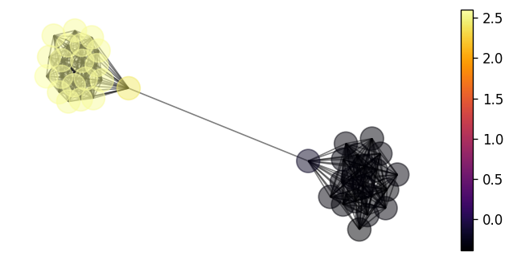
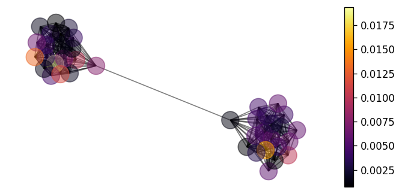

Graph Kernels
This notebook demonstrates how regression models can be constructed on the vertices of a graph using a Gaussian process with a Matérn kernel presented in . For a general discussion of the kernels supported within GPJax, see the kernels notebook.
import random
# Enable Float64 for more stable matrix inversions.
from jax import config
import jax.numpy as jnp
import jax.random as jr
from jaxtyping import install_import_hook
import matplotlib as mpl
import matplotlib.pyplot as plt
import networkx as nx
from examples.utils import use_mpl_style
config.update("jax_enable_x64", True)
with install_import_hook("gpjax", "beartype.beartype"):
import gpjax as gpx
# set the default style for plotting
use_mpl_style()
key = jr.key(42)
cols = mpl.rcParams["axes.prop_cycle"].by_key()["color"]
Graph construction
Our graph \(\mathcal{G}=\lbrace V, E \rbrace\) comprises a set of vertices \(V = \lbrace v_1, v_2, \ldots, v_n\rbrace\) and edges \(E=\lbrace (v_i, v_j)\in V \ : \ i \neq j\rbrace\). In particular, we will consider a barbell graph that is an undirected graph containing two clusters of vertices with a single shared edge between the two clusters.
Contrary to the typical barbell graph, we'll randomly remove a subset of 30 edges within each of the two clusters. Given the 40 vertices within the graph, this results in 351 edges as shown below.
vertex_per_side = 20
n_edges_to_remove = 30
p = 0.8
G = nx.barbell_graph(vertex_per_side, 0)
random.seed(123)
[G.remove_edge(*i) for i in random.sample(list(G.edges), n_edges_to_remove)]
pos = nx.spring_layout(G, seed=123) # positions for all nodes
nx.draw(
G, pos, node_size=100, node_color=cols[1], edge_color="black", with_labels=False
)
/home/runner/.local/share/hatch/env/virtual/gpjax/9bz-h8Il/docs/lib/python3.10/site-packages/IPython/core/events.py:82: UserWarning: There are no gridspecs with layoutgrids. Possibly did not call parent GridSpec with the "figure" keyword
func(*args, **kwargs)
/home/runner/.local/share/hatch/env/virtual/gpjax/9bz-h8Il/docs/lib/python3.10/site-packages/IPython/core/pylabtools.py:170: UserWarning: There are no gridspecs with layoutgrids. Possibly did not call parent GridSpec with the "figure" keyword
fig.canvas.print_figure(bytes_io, **kw)
Computing the graph Laplacian
Graph kernels use the Laplacian matrix \(L\) to quantify the smoothness of a signal (or function) on a graph \(\(L=D-A,\)\) where \(D\) is the diagonal degree matrix containing each vertices' degree and \(A\) is the adjacency matrix that has an \((i,j)^{\text{th}}\) entry of 1 if \(v_i, v_j\) are connected and 0 otherwise. Networkx gives us an easy way to compute this.
Simulating a signal on the graph
Our task is to construct a Gaussian process \(f(\cdot)\) that maps from the graph's vertex set \(V\) onto the real line. To that end, we begin by simulating a signal on the graph's vertices that we will go on to try and predict. We use a single draw from a Gaussian process prior to draw our response values \(\boldsymbol{y}\) where we hardcode parameter values. The corresponding input value set for this model, denoted \(\boldsymbol{x}\), is the index set of the graph's vertices.
x = jnp.arange(G.number_of_nodes()).reshape(-1, 1)
true_kernel = gpx.kernels.GraphKernel(
laplacian=L,
lengthscale=2.3,
variance=3.2,
smoothness=6.1,
)
prior = gpx.gps.Prior(mean_function=gpx.mean_functions.Zero(), kernel=true_kernel)
fx = prior(x)
y = fx.sample(seed=key, sample_shape=(1,)).reshape(-1, 1)
D = gpx.Dataset(X=x, y=y)
/home/runner/.local/share/hatch/env/virtual/gpjax/9bz-h8Il/docs/lib/python3.10/site-packages/jaxtyping/_decorator.py:449: UserWarning: X is not of type float64. Got X.dtype=int64. This may lead to numerical instability.
out = fn(*args, **kwargs)
We can visualise this signal in the following cell.
nx.draw(G, pos, node_color=y, with_labels=False, alpha=0.5)
vmin, vmax = y.min(), y.max()
sm = plt.cm.ScalarMappable(
cmap=plt.cm.inferno, norm=plt.Normalize(vmin=vmin, vmax=vmax)
)
sm.set_array([])
ax = plt.gca()
cbar = plt.colorbar(sm, ax=ax)
/home/runner/.local/share/hatch/env/virtual/gpjax/9bz-h8Il/docs/lib/python3.10/site-packages/IPython/core/events.py:82: UserWarning: There are no gridspecs with layoutgrids. Possibly did not call parent GridSpec with the "figure" keyword
func(*args, **kwargs)
/home/runner/.local/share/hatch/env/virtual/gpjax/9bz-h8Il/docs/lib/python3.10/site-packages/IPython/core/pylabtools.py:170: UserWarning: There are no gridspecs with layoutgrids. Possibly did not call parent GridSpec with the "figure" keyword
fig.canvas.print_figure(bytes_io, **kw)

Constructing a graph Gaussian process
With our dataset created, we proceed to define our posterior Gaussian process and optimise the model's hyperparameters. Whilst our underlying space is the graph's vertex set and is therefore non-Euclidean, our likelihood is still Gaussian and the model is still conjugate. For this reason, we simply perform gradient descent on the GP's marginal log-likelihood term as in the regression notebook. We do this using the BFGS optimiser.
likelihood = gpx.likelihoods.Gaussian(num_datapoints=D.n)
kernel = gpx.kernels.GraphKernel(laplacian=L)
prior = gpx.gps.Prior(mean_function=gpx.mean_functions.Zero(), kernel=kernel)
posterior = prior * likelihood
For researchers and the curious reader, GPJax provides the ability to print the
bibtex citation for objects such as the graph kernel through the cite() function.
@inproceedings{borovitskiy2021matern,
authors = {Borovitskiy, Viacheslav and Azangulov, Iskander and Terenin, Alexander and Mostowsky, Peter and Deisenroth, Marc and Durrande, Nicolas},
title = {Matérn Gaussian Processes on Graphs},
year = {2021},
booktitle = {International Conference on Artificial Intelligence and Statistics},
}
With a posterior defined, we can now optimise the model's hyperparameters.
opt_posterior, training_history = gpx.fit_scipy(
model=posterior,
objective=lambda p, d: -gpx.objectives.conjugate_mll(p, d),
train_data=D,
)
Current function value: -118.270426
Iterations: 42
Function evaluations: 66
Gradient evaluations: 55
/home/runner/.local/share/hatch/env/virtual/gpjax/9bz-h8Il/docs/lib/python3.10/site-packages/scipy/optimize/_minimize.py:726: OptimizeWarning: Desired error not necessarily achieved due to precision loss.
res = _minimize_bfgs(fun, x0, args, jac, callback, **options)
Making predictions
Having optimised our hyperparameters, we can now make predictions on the graph. Though we haven't defined a training and testing dataset here, we'll simply query the predictive posterior for the full graph to compare the root-mean-squared error (RMSE) of the model for the initialised parameters vs the optimised set.
initial_dist = likelihood(posterior(x, D))
predictive_dist = opt_posterior.likelihood(opt_posterior(x, D))
initial_mean = initial_dist.mean()
learned_mean = predictive_dist.mean()
rmse = lambda ytrue, ypred: jnp.sum(jnp.sqrt(jnp.square(ytrue - ypred)))
initial_rmse = jnp.sum(jnp.sqrt(jnp.square(y.squeeze() - initial_mean)))
learned_rmse = jnp.sum(jnp.sqrt(jnp.square(y.squeeze() - learned_mean)))
print(
f"RMSE with initial parameters: {initial_rmse: .2f}\nRMSE with learned parameters:"
f" {learned_rmse: .2f}"
)
RMSE with initial parameters: 8.42
RMSE with learned parameters: 0.29
We can also plot the source of error in our model's predictions on the graph by the following.
error = jnp.abs(learned_mean - y.squeeze())
nx.draw(G, pos, node_color=error, with_labels=False, alpha=0.5)
vmin, vmax = error.min(), error.max()
sm = plt.cm.ScalarMappable(
cmap=plt.cm.inferno, norm=plt.Normalize(vmin=vmin, vmax=vmax)
)
ax = plt.gca()
cbar = plt.colorbar(sm, ax=ax)
/home/runner/.local/share/hatch/env/virtual/gpjax/9bz-h8Il/docs/lib/python3.10/site-packages/IPython/core/events.py:82: UserWarning: There are no gridspecs with layoutgrids. Possibly did not call parent GridSpec with the "figure" keyword
func(*args, **kwargs)
/home/runner/.local/share/hatch/env/virtual/gpjax/9bz-h8Il/docs/lib/python3.10/site-packages/IPython/core/pylabtools.py:170: UserWarning: There are no gridspecs with layoutgrids. Possibly did not call parent GridSpec with the "figure" keyword
fig.canvas.print_figure(bytes_io, **kw)

Reassuringly, our model seems to provide equally good predictions in each cluster.
System configuration
Author: Thomas Pinder
Last updated: Fri Nov 01 2024
Python implementation: CPython
Python version : 3.10.15
IPython version : 8.29.0
networkx : 3.4.2
jaxtyping : 0.2.34
jax : 0.4.27
matplotlib: 3.9.2
gpjax : 0.9.3
Watermark: 2.5.0